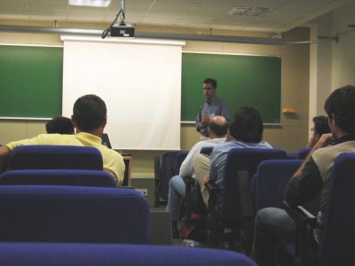
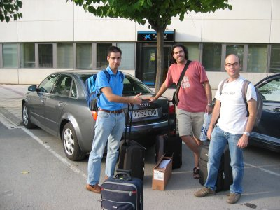
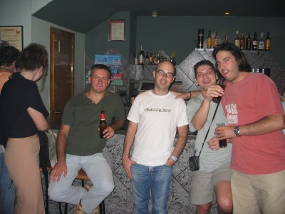
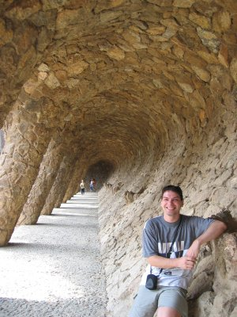
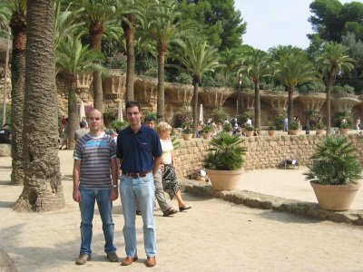
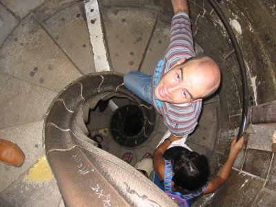
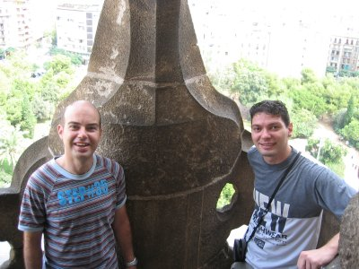
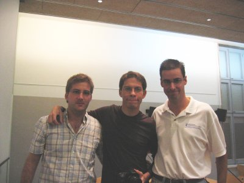
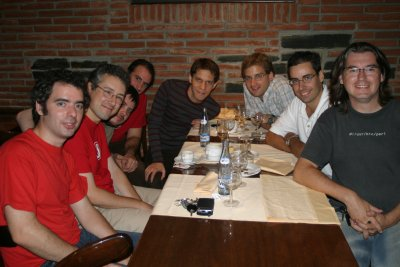

|
”Locomoción de un Robot Ápodo Modular con el Procesador MicroBlaze". Universidad Autónoma de Barcelona, Septiembre 2004. |
|
 |
Título: “Locomoción de un Robot Ápodo Modular con el Procesador MicroBlaze”
Actividad: Exposición del artículo con el mismo nombre. Artículo disponible aquí.
Duración: 15 minutos
Evento: IV Jornadas sobre Computación Reconfigurable y Aplicaciones, JCRA04.
Lugar: Escuela Técnica Superior de Ingenierías. Universidad Autónoma de Barcelona (UAB).
Fecha: 13 de Septiembre de 2004
Ponentes:
Los robots modulares reconfigurables prometen ofrecer mayor versatilidad, robustez y menor coste. Están construidos a partir de módulos pequeños y sencillos, capaces de unirse y separarse entre ellos. Cada módulo está controlado por un procesador convencional. En este artículo presentamos un prototipo de un robot ápodo modular (cube revolutions), constituido por la unión en cadena de 8 módulos iguales. Se desplaza en línea recta, por medio de ondas que recorren su cuerpo desde la cola hasta la cabeza. El robot calcula las posiciones de las articulaciones a partir de los parámetros de la onda: forma, amplitud y longitud de onda. Por flexibilidad, se ha utilizado el soft-processor Microblaze, empotrado en una FPGA Xilinx. Las FPGAs dotan a los robots Modulares de mayor versatilidad, al no depender de un procesador convencional concreto ni de una arquitectura hardware determinada.
|
Descargas |
|
pres-cube-rev.sxi (1,1 MB) |
Presentación para OpenOffice 1.1.3 |
|
pres-cube-rev.pdf (470KB) |
Presentación en PDF |
|
cube-rev.pdf (160KB) |
Artículo en PDF |
|
cube-rev.tgz (1.3MB) |
Fuentes del artículo para Lyx (Dibujos en Xfig) |
Se condecen permisos para usar, modificar y/o distribuir esta presentación, siempre que se mantenga esta nota.
Artículo completo: [PDF] [HTML] [Más información]
Robot Cube Revolutions
Robot ápodo Cube Reloaded (Versión anterior a Cube Revolutions)
Aplicación libre QCAD, para diseño en 2D. Disponible en Debian (apt-get install qcad)
Aplicación libre Blender, para diseño en 3D. Disponible en Debian (apt-get install blender)
Librerías gráficas GTK
El congreso se celebró los días 13, 14 y 15 de Septiembre (Lunes, Martes y Miércoles respectivamente) pero decidimos irnos a Barcelona el Sábado 11, así aprovechamos para hacer turismo. Iván González, Alberto Martín, Sergio López Buedo y yo (Juan González) alquilamos un coche y nos fuimos. Cuando pasamos por Zaragoza paramos para comer y ya aprovechamos para hacer un poco de turismo. En la foto de la izquierda estamos Iván y yo en frente del Pilar. En la foto de la derecha estamos Alberto, Sergio y yo, delante del coche alquilado, a nuestra llegada al campus de la UAB.
|
 |
Después de instalarnos en el hotel (situado en el propio campus de la UAB) fuimos a Barecelona a Cenar. Allí habíamos quedado con Elías Todorovich, que llevaba en Barcelona desde el Viernes. Al terminar la cena nos fuimos de marcha a Sabadell, ya que nos pillaba muy cerca del hotel.
|
 |
El domingo por la mañana fuimos a conocer Barcelona. Yo había estado en el 97, en el concurso robots luchadores de Sumo en la UPC, pero no había tenido tiempo de ver casi nada. Por la mañana estuvimos en el parque Güel
|
 |
 |
Luego entramos en la Sagrada Familia. Me encantó. Lo que más me llamó la atención fueron los pilares interiores, que imitan a los árboles. Por supuesto, subimos a lo más alto :-). En la foto de la izquierda podemos ver a Sergio subiendo por la escalera en forma de espiral. En la derecha están Iván y Sergio desde uno de los balcones. Alberto se quedó en la habitación durmiendo.
|
 |
 |
El lunes tuve mis dos ponencias, una por la mañana y otra por la tarde. En la de la mañana ,"Simulación de Diseños VHDL con Software Libre: La Herramienta GHDL", conocí a Antonio Martínez, de la Universidad de Granada. Me habló de que al día siguiente, Miguel de Icaza iba a dar una charla sobre Mono en la UOC y que se quería pasar. En la charla sobre Cube Revolutions, por la tarde, no hice ninguna demostración. Lo estaba reservando para mostrarlo en mi ponencia en el Clawar.
|
|
El miércoles por la tarde Antonio y yo nos fuimos a la Charla de Miguel de Icaza. Estuvo genial!! A mí me interesó particularmente porque todo el software de Cube Revolutions lo estoy rehaciendo en C# y Mono . Después de la charla nos fuimos a cenar. En la mesa tuve la oportunidad de hablar con Xavier de Blas. Ya nos conocíamos porque nos había presentado Deckard en el VI congreso de Hispalinux. Empezamos a comentar sobre el programa Gsalta y le propuse la nueva arquitectura para el cronometrador: hacer un cronometrador externo al PC que se conectase por el puerto serie. Así es como nació el proyecto Chronojump y la tarjeta Chronopic (aunque por aquel entones todavía no tenían esos nombres).
|
 |
 |
1/Enero/2005: Añadido enlace a Cube Revolutions
16/Mayo/2005: Publicada información en esta web. Con mucho retraso, lo sé ;-)